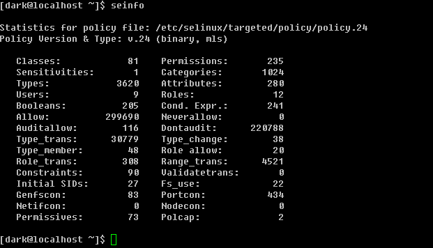
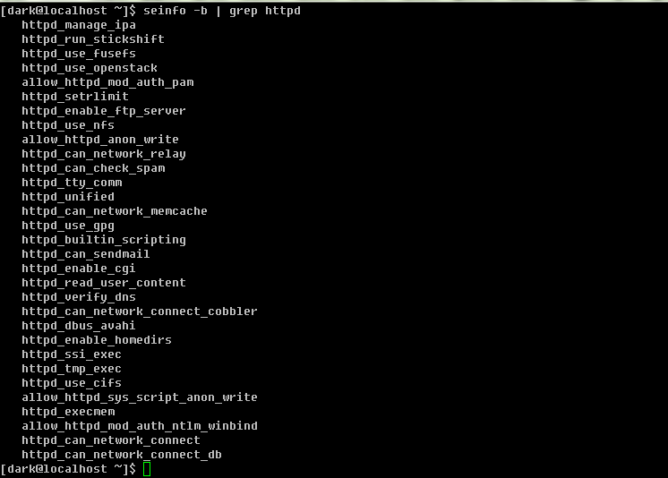
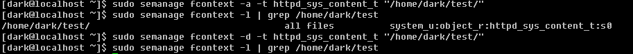

|
10程序管理与SELinux初探 nohup ... & 终端机后台 進程查看 進程管理 系統資源查看 SELinux 進程管理 kill -signal pid //用法見jobs 工作调度 killall [-iIE] -signal [command] //為以指定命令啟動的全部進程 發送一個信號 -i //以交互方式運行(若要刪除進程 將提示用戶) -e //後面接到command要一直 但完整命令不超過15個字符 -I //命令忽略大小寫 example killall -9 httpd 進程優先級 系統資源查看 free //查看內存使用情況 uname //查看系統內核 uptime //查看系統啟動時間 運行時間 負載 netstat //跟踪網絡 Active Internet...(網絡連接信息) Proto 網絡協議 Recv_Q 用戶進程發送數據 Send_Q 遠程進程發送數據 LocalAddress 本地 ip 端口 ForeignAddress 遠程 ip 端口 State 狀態 ESTABLISED(建立) LUSTEN(監聽) Active Unix...(通過socket與本地進程連接的信息) Proto 一般顯示 unix RefCnt 連接到此socket的進程數量 Flags 連接標識 Type socket類型 strean dgram State 若為CONNECTED表示多個進程已經建立連接 Path 連接到此socket的相關程序路徑 或 相關數據輸出路徑 dmesg //查看系統檢測硬件情況 vmstat //檢測資源表和 r 等待運行進程數 b 不可喚醒進程數 swpd 虛擬內存使用量 free 為被使用內存量 buff 用於緩衝存儲器 cache 用於高速緩存 si 磁盤中將程序取出量 so 由於內存不足將程序寫入到swap量 bi 由磁盤寫入塊數量 bo 寫入到磁盤去掉塊數量 in 每秒被中斷進程次數 cs 每秒事件切換次數 us 非內核層使用cpu狀態 sy 內存層使用cpu狀態 id 閒置狀態 wa 等待I/O所耗費cpu狀態 st 被虛擬機盜用的cpu使用狀態 fuser [-umv] [-k [i] [-signal] ] file/dir //列出正在使用此文件/目錄 的進程的pid lsof [-aUu] [+d] //列出被進程打開的文件 pidof [-sx] program_name //列出正在執行的進程pid (多個程序名以空格隔開) SELinux identify
root 表示root帳號身份
system_u 表示系統出現方面標識 通常就是進程
user_u 代表一般用戶帳號相關身份
role
object_r 代表文件或目錄資源
system_r 代表進程 一般用戶也會被指定為此值
type 關係到主體是否能訪問目標
在文件資源中為類型 type
在主體中稱為域 domain
example
ls -Zd /usr/sbin/httpd /var/www/html
-rwxr-xr-x root root system_u:object_r:httpd_exec_t /usr/sbin/httpd
drwxr-xr-x root root system_u:object_r:httpd_sys_content_t /var/www/html
故httpd屬於httpd_exec_t類型 html屬於httpd_sys_content_t此是一個可以讓httpd域讀取的類型
首先觸發httpd去訪問html
httpd 將具有httpd域
根據httpd域得知httpd_sys_content_t是可以被訪問的
根據rwx權限 訪問
SELinux 的啟動 關閉 查看 getenforce //查看SELinux運行狀態 Enforcing 以強制模式啟動(既正在運行SELinux) permissive 寬容模式(既正在運行SELinux 但只會發出警告 而不會限制訪問) disabled 關閉(既沒有運行SELinux) [dark@localhost /]$ sestatus //查看策略 SELinux status: enabled //是否啟用SELinux SELinuxfs mount: /selinux //SELinux相關文件數據掛載點 Current mode: enforcing //運行模式 Mode from config file: enforcing //配置文件指定模式 Policy version: 24 Policy from config file: targeted //目前的策略 SELinux 配置文件在 /etc/selinux/config SELINUX=enforcing //運行模式 SELINUXTYPE=targeted //策略 注意 修改SELinux 配置文件需要重新啟動系統 若以關閉改為啟動 還需要修改 系統啟動配置 /boot//grub/menu.lst 中將 selinux=0 去掉(或改為=其他非0值 ==0代表跳過selinux配置文件且不啟動selinux)SELinux由關閉改為啟動 開機將花費不少時間用於寫入安全上下文 且在寫完後還需要重啟一次才能啟動SELinux 設置安全上下文 chcon [-R] [-t type] [-u user] [-r role] 文件 //設置文件為指導安全上下文 chcon [-R] --reference=範例文件 文件 //設置文件安全上下文 和範例文件相同 -R //連同目錄下的子目錄也同時修改 -t //後接類型 -u //後接身份標識 -r //後接角色 restorecon [-RV] 文件 //設置文件為此目錄下默認安全上下文 -R 連同子目錄也設置 -V 將過程顯示到屏幕 seinfo [-Atrub] //查詢已定義的策略 seinfo [-Atrub] -A //查詢下面全部信息 -t //查詢所有類型type -r //...角色role -u //...身份標識user -b //查詢所有規則種類(布爾值) 由第一行 /etc/selinux/targeted/policy/policy.24知道此是targeted的策略 Types: 3620 指出安全上下文類型數 Booleans: 205 指出針對網絡服務制定的規則數 查詢所有與httpd相關的布爾值  sesearch [-A] //查詢策略 啟用關閉布爾值規則 默認目錄安全上下文 semanage -a //增加 -m //修改 -d //刪除 sudo semanage fcontext -l //查詢默認安全上下文 sudo semanage fcontext -a -t 規則 "目錄" //設置目錄默認規則 example  |